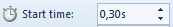
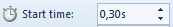

Час. Рад са видео записом¶
- На овом часу ћемо говорити о:
основној обради видео-записа;
претварању (конверзији) типа звучних датотека.
Да бисмо снимили жељени видео-запис потребно је да користимо камеру мобилног телефона или другог дигиталног уређаја. Током снимања видео-записа често се сниме и делови који су непотребни и нежељени. Често овако снимљен видео-запис треба додатно уредити – скратити, додати различите ефекте, најавну и одјавну шпицу, музику…
Постоји велики број алата за обраду видео-записа. Једноставан за употребу и често коришћен је бесплатан програм Windows Movie Maker. Oвај програм можемо да преузмемо са интернет адресе https://www.winmoviemaker.com/, а затим инсталирамо на рачунар.
Опис поступка инсталације програма Windows Movie Maker можете погледати на доњем видеу:

Програм Windows Movie Maker покрећемо кликом на Start → All Programs → Windows Movie Maker.
Отвориће се радно окружење следећег изгледа:

Радна површина програма Windows Live Movie Maker:
Трака са алатима;
Прозор за приказ видео-записа;
Простор за уређивање видео-записа;
Контроле за репродукцију видео-записа;
Клизач за смањивање или увећавање елемената видео-записа приказаних у простору за уређивање).
Опис радне површине програма Windows Movie Maker можете погледати на доњем видеу:
Радно окружење је простор у који можемо да додајемо видео-записе, слике, звучне записе… и да их, затим, едитујемо (скраћујемо, додајемо најавну и одјавну шпицу, титлујемо) и форматирамо (додајемо ефекте).
Видео-запис који смо снимили телефоном и пребацили на рачунар додајемо у Windows Movie Maker тако што, у картици Home одаберемо опцију , пронађемо наш видео-запис и кликнемо на Open. У простору за уређивање, учитани видео-запис приказује се у виду низа сцена које чине временску линију видео-записа и које можемо даље да уређујемо.
{kind=link}
Опис поступка отварања постојећег видео-записа у програму Windows Movie Maker можете погледати на доњем видеу:
Често се дешава да снимљени видео-запис буде оријентисан погрешно. Да би смо такав видео-запис могли да користимо, неопходно је да га ротирамо (окренемо) коришћењем опције из картице Home.
{kind=link}
Опис поступка ротирања видео-записа у програму Windows Movie Maker можете погледати на доњем видеу:
Често снимљени видео-запис садржи и неке непотребне сцене или предуго траје. За одбацивање нежељених делова видео-записа користимо опцију Edit → Trim.
Довољно је да одредимо:
почетну тачку (време) нежељеног дела видео-записа (уносећи вредност изражену у секундама у поље и
крајњу тачку (време) нежељеног дела видео-записа уносећи жељену вредност изражену у секундама у поље ,
{kind=link}
{kind=link}
И, на крају кликнемо на дугме  .
.
Опис поступка одбацивања нежељених делова видео-записа у програму Windows Movie Maker можете погледати на доњем видеу:
Видео-запис чувамо кликом на падајућу листу Save movie и из ње бирамо опцију  . Отвориће се прозор у коме бирамо место где ћемо чувати видео-запис.
По завршетку поступка чувања видео-записа отвара се прозор који нам даје могућност да сачувани видео-запис репродукујемо (Play), да отворимо фасциклу у којој је сачуван (Open Folder) или да прозор затворимо (Close).
. Отвориће се прозор у коме бирамо место где ћемо чувати видео-запис.
По завршетку поступка чувања видео-записа отвара се прозор који нам даје могућност да сачувани видео-запис репродукујемо (Play), да отворимо фасциклу у којој је сачуван (Open Folder) или да прозор затворимо (Close).
Напомена: Видео-запис можемо да сачувамо и коришћењем опције  → Save Project As.
→ Save Project As.
Тада ће он бити сачуван као датотека са екстензијом .wlmp, коју можемо да отворимо и репродукујемо само у програму Windows Movie Maker.
Опис поступка чувања видео-записа у програму Windows Movie Maker можете погледати на доњем видеу:
Сваком видео-запису је могуће додати најавну шпицу (кликом на дугме ), титл (кликом на дугме  ) и одјавну шпицу (кликом на дугме ). Све ове опције налазе се у картици Home.
) и одјавну шпицу (кликом на дугме ). Све ове опције налазе се у картици Home.
{kind=link}
Као и код филмова које гледамо у биоскопу или на телевизији, најавна и одјавна шпица могу да имају различите ефекте (працак, прелаз из црнила у пуно светло, прелаз из пуног светла у црнило…). Све ове ефекте бирамо из палете Effects, коју проналазимо у катрици Format.
{kind=link}
Поред ефеката, најавној и одјавној шпици можемо да подесимо боју позадине кликом на Format → Backgroundcolor.
Време трајања најавне и одјавне шпице морамо добро да одмеримо. Оне не треба да трају сувише дуго, али ни прекратко.
Дужину најавне и одјавне шпице подешавамо уношењем вредности у опцији у картици Еdit, где уносимо број секунди трајања ових шпица.
Како би најавна и одјавна шпица имале смисла важно им је додати текст, коришћењем  која се налази у картици Format.
Сва форматирања текста (промену фонта, величине и боје) вршимо на исти начин као и у било ком програму за обраду текста.
Неопходно је да тексту најавне и одјавне шпице одредимо тренутак у коме ће се појавити , као и дужину приказа .
која се налази у картици Format.
Сва форматирања текста (промену фонта, величине и боје) вршимо на исти начин као и у било ком програму за обраду текста.
Неопходно је да тексту најавне и одјавне шпице одредимо тренутак у коме ће се појавити , као и дужину приказа .
{kind=link}
{kind=link}
{kind=link}
Важно: Kaда креирамо видео-записе треба да имамо на уму да постоје људи који не чују добро. Зато је увек добро додати одговарајући титл.
Опис поступка додавања најавне. одјавне шпице и титла у програму Windows Movie Maker можете погледати на доњем видеу:
Да бисмо направили што квалитетнији и интересантнији видео-запис, треба да имамо у виду да поред звука који настаје током самог снимања, можемо да додамо и звук/музику по нашем избору.
То чинимо кликом на падајућу листу  која се налази у картици Home.
која се налази у картици Home.
Ако из листе изаберемо опцију:

Након додавања, звук можемо да мењамо:
подесимо му јачину (Options → Music volume);
додамо ефекат постепеног појачавања (Options → Fade in);
додамо ефекат постепеног утишавања (Options → Fade out);
подесимо време почетка (Options → Start time)
подесимо краја репродукције (Options → End point).
Опис поступка додавања звучног записа у програму Windows Movie Maker можете погледати на доњем видеу:
Дешава се да неки програми „не умеју” да раде са свим типовима видео датотека. Тада вршимо конверзију (промену) типа датотеке. Конверзију вршимо и када желимо да видео датотеке заузимају мање меморијског простора. Као и код звучног записа, за конверзију типова датотека користимо програм Format Factory.
- Шта смо научили?
да су мобилни дигитални уређаји најчешћа средства за снимање видео-записа;
да видео-запис можемо додатно да уредимо – уклањање нежељених делова, додајемо различите ефекте, најавну и одјавну шпицу, титл и звук;
да конверзију типа датотеке вршимо када програм који користимо „не уме” да ради са датотекама које имамо или када желимо да оне заузимају мање меморијског простора.